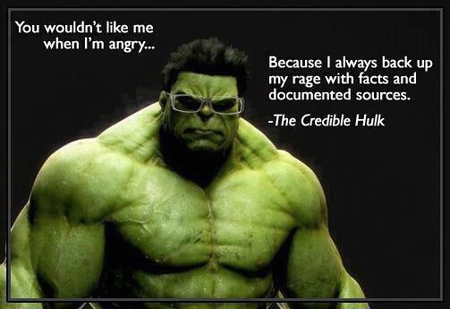
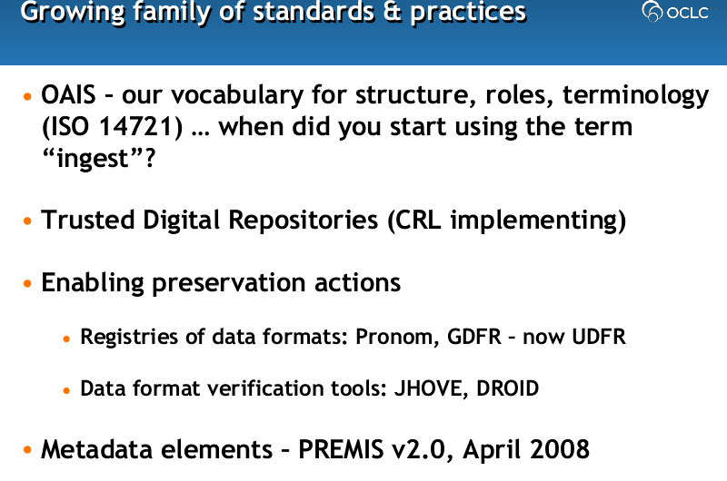
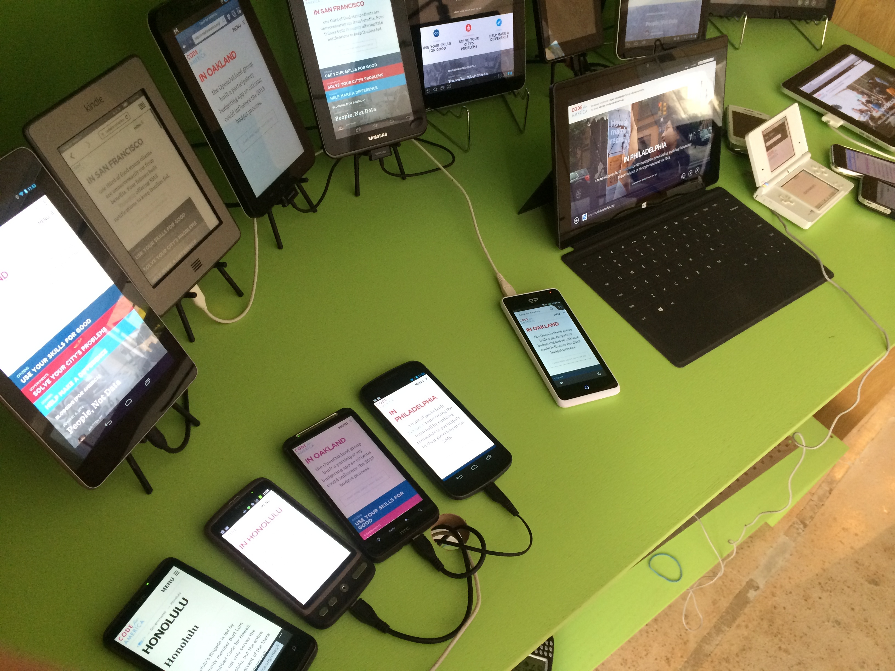
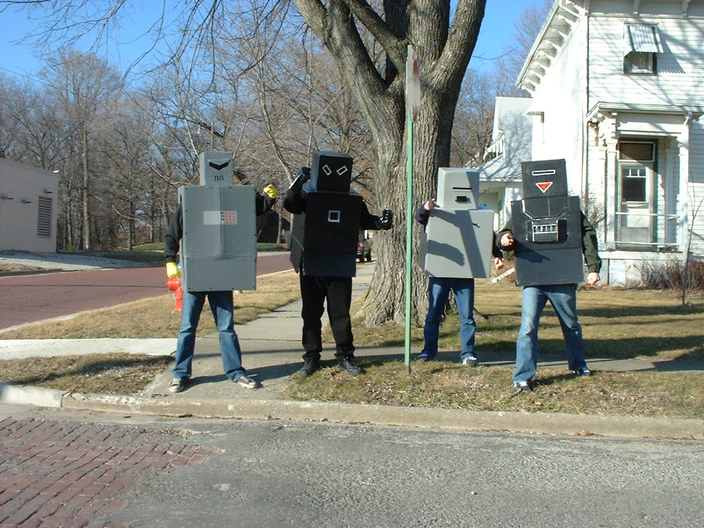
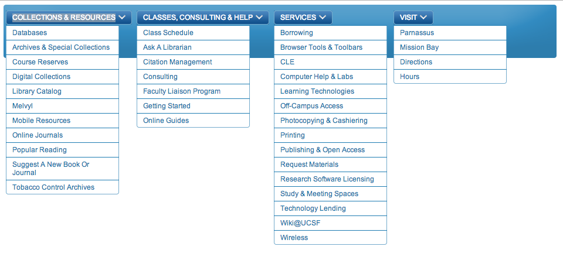
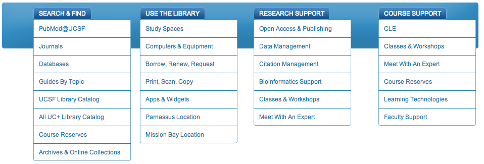

Website Principles
(oh yeah, and new menus...)
Put users first
Be credible and trustworthy

Keep it simple and clear
Provide clear hierarchy and visual cues
Eliminate library jargon

Design for a diverse audience using a wide range of devices

Innovate and evolve

Site Menus
Current:
Proposed New:


Sources
Student Advisory Board to the Library
LibQual results and comments
Resource Access Improvement group
informal user testing
Sources (cont'd)
Megan Laurance
on basic science researchers
Art Townsend
on Mission Bay users
Ben Stever
and
Kirk Hudson
on Tech Commons users
Polina Ilieva
and
Maggie Hughes
on researchers of special collections and archives
Dylan Romero
on those who use multimedia stations and equipment and the CLE
Andy Panado
,
Shauna Hannibal
, and
Don Ciccone
on users of Public Services
Peggy Tahir
,
Min-Lin Fang
, and
Whit
on users of Education Librarian services
Sources (cont'd cont'd)
Liz Taylor
Sean McClelland
Jim Munson
Gail Persily
Julia Kochi
other people we're forgetting and we're really sorry...
Resources
Principles:
http://tiny.ucsf.edu/principles
Menus Prototype:
http://menus.library.ucsf.edu/
Photo acknowledgments
Rugby fans by @Doug88888
Credible Hulk by www.YoVenice.com
Clear vision by DaveLawler
Signpost by Andrew Tarrant
Jargon generated with
Wordle.net
Devices by Jeremy Keith
Robots by Dan Coulter
←
→
/
Go to slide: